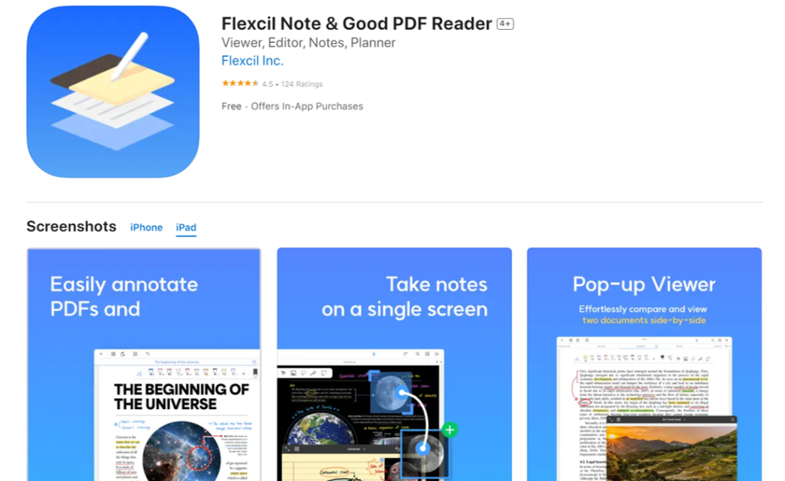
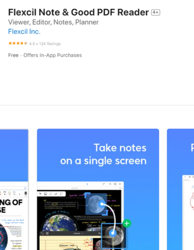

Flexcil 避坑：那些看起来像功能 Bug 的小问题，其实都有解法
用 Flexcil 半年踩了四个大坑——打印批注消失、迁移丢文件、键盘快捷键失灵、模板换完内容错位，逐个讲清楚症状、原因和解法。
Flexcil 这款手写笔记 + PDF 批注工具，我用了快半年。一开始是在它的官网上看到介绍，冲着 iPad 手写体验和 Android 端键盘快捷键支持入坑的，结果用着用着发现——这软件看着简单，其实有几个坑，如果没提前注意，轻则白忙活半小时，重则整个笔记库废掉。
这篇就是把我踩过的坑挨个摊开讲，每个都讲清楚我当时看到什么不对劲、为什么会这样、怎么救或者怎么提前避开。用得上就顺手拿走，别像我一样一个一个试错。

坑一：打印出来批注全没了
这个坑我第一踩就懵了。那天用 Flexcil 给一份 PDF 做了很多批注——高亮、下划线、手写笔记都有，想打印出来带走。在 Flexcil 里点了打印，走系统的打印流程，结果拿到纸一看：干干净净一张原文，我花了一小时加的批注一条都没出现。
一开始以为是打印机的问题，换了台打印机还是不行。又以为是 Flexcil 的打印入口有 bug，来回试了好多次。最后翻了Flexcil文档才明白——Android 端部分打印机或打印 App 不能正确处理 Flexcil 批注层。Flexcil 的批注是独立于 PDF 正文的层，某些打印驱动渲染 PDF 时只抓了正文层，批注那层就被忽略了。
解法很简单：不要直接打印，先导出为展平 PDF，再用系统打印功能打印这个展平后的文件。展平就是把批注层和正文层合成一张静态图，打印机拿到的就是一份完整的 PDF，不会漏东西。我后来每次打印都先走一遍展平导出，再也没出过问题。
如果你在其他 PDF 阅读器里能看到批注但打印时没有，基本就是这个问题，直接展平是最稳的方案。
坑二：版本迁移后 PDF 和笔记对不上
去年底 Flexcil 2 发布，官方说购买过 Flexcil 1 标准版的用户可以免费升级。我高高兴兴在 Google Play 更新了——其实除了应用商店，也能从Flexcil下载拿到安装包，国内网络环境下反而更快。然后点开 Flexcil 2 选了"迁移 Flexcil 1 数据"，按提示找到备份文件等了几分钟。迁移完成，打开旧笔记一看——PDF 页面是空的，笔记里引用的 PDF 页全断了，只剩手写的笔记内容飘在那儿。
查了官方的已知问题列表，主要有两个原因：一是备份文件损坏——如果备份过程没完整跑完就中断，备份文件里 PDF 和笔记的引用关系就断了，迁移过去自然对不上；二是早期 Flexcil 1 的备份格式本身就有 bug，迁移到 Flexcil 2 时引用会丢失。
怎么救？首先，迁移前一定要在 Flexcil 1 里确认备份进度条跑完了再退出，不要中途切 App。如果已经迁坏了，有备份好的完整文件的话，删了 Flexcil 2 重装，重新走一遍完整备份 → 迁移的流程。没有备份的话，只能去支持中心搜"数据迁移错误"，官方有针对不同情况的恢复脚本。
我的教训是：跨大版本迁移之前，全量备份两次——一份留在原设备的本地，一份拷到电脑上。别嫌麻烦，丢过一次笔记的人都懂。
坑三：外接键盘快捷键失灵
我日常用蓝牙键盘接 Android 设备操作 Flexcil，键盘快捷键确实能大幅提升效率——比如 Control + Tab 切标签、Alt + O 打开文件管理器、Control + Alt + A 打开批注菜单。但有几次我按快捷键完全没反应，或者反而触发了系统的某个功能，白白浪费时间。
最常见的一种情况是手势/笔模式切换键和系统快捷键冲突。Flexcil 里手势和笔模式的切换是 Control + '，但某些 Android 系统版本把这个组合键分配给了别的功能——比如切换输入法或打开语言设置。我第一次遇到时以为要重装 Flexcil，后来才发现问题在系统层。
还有一种情况是菜单被隐藏后，部分快捷键会失效。比如 Shift + Tab 是显隐菜单，如果你不小心把菜单藏起来了，此时一些依赖菜单弹出的快捷键就按不动了。先按 Shift + Tab 把菜单叫出来，再试快捷键，通常就恢复正常了。
我现在的做法是：接键盘后先试一遍模式切换和菜单显隐这两个最基础的快捷键，确认没问题再批量操作。一旦某个键失灵，先排除系统冲突，再检查菜单状态，不用急着重启 App。

坑四：换了模板之后内容错位
Flexcil 新建笔记时让你选模板——空白、点阵、方格、横线，还有季度规划、日计划这些。我一开始贪新鲜，先建了个方格笔记写了几页数学公式，觉得方格不够看，后来长按笔记选了"更换模板"换成了点阵。换完打开一看——原来方格上写的公式歪歪扭扭，有些行飞离了网格，嵌入的 PDF 页也被拉长变形了。
原因其实不复杂：不同模板的页面尺寸和网格密度不一样。方格模板的网格间距是 5mm，点阵是 10mm，模板一换，Flexcil 把原内容硬套进新网格里，手写内容和 PDF 页就会错位。而且某些计划模板的页面比例跟空白模板不同，PDF 页面放进去会被强制缩放。
解法很实在：模板尽量在新建笔记的那一刻就选好，写了内容之后尽量别换。如果一定要换，先在原模板下导出一份备份，换完模板检查一遍内容，有错位的话还能回退。另外，嵌入 PDF 的笔记最好用空白或方格模板，别用比例差异大的计划类模板，PDF 页面被拉伸的概率会小很多。
防坑清单
把上面四个坑浓缩成几句话，每次用 Flexcil 前扫一眼：
- 打印前先展平，别直接打，展平导出再上打印机最稳
- 大版本迁移前全量备份两次，一份本地一份电脑，别嫌麻烦
- 键盘快捷键先试基础组合，确认没和系统冲突再批量操作
- 模板一开始就定好，写了内容之后尽量不换，嵌入 PDF 别用计划模板
- 菜单隐藏后快捷键可能失效，先 Shift + Tab 叫出来再按
知道这些坑之后，Flexcil 其实相当省心。手写体验、批注功能、多设备同步该有的都有——只要提前避开上面这几个雷，日常用下来基本不会出什么幺蛾子。另外这套资料我在 GitHub、Gitee、GitCode 三处都留了备份，国内访问或备份的话可以顺手转到对应仓库：GitHub、Gitee、GitCode。